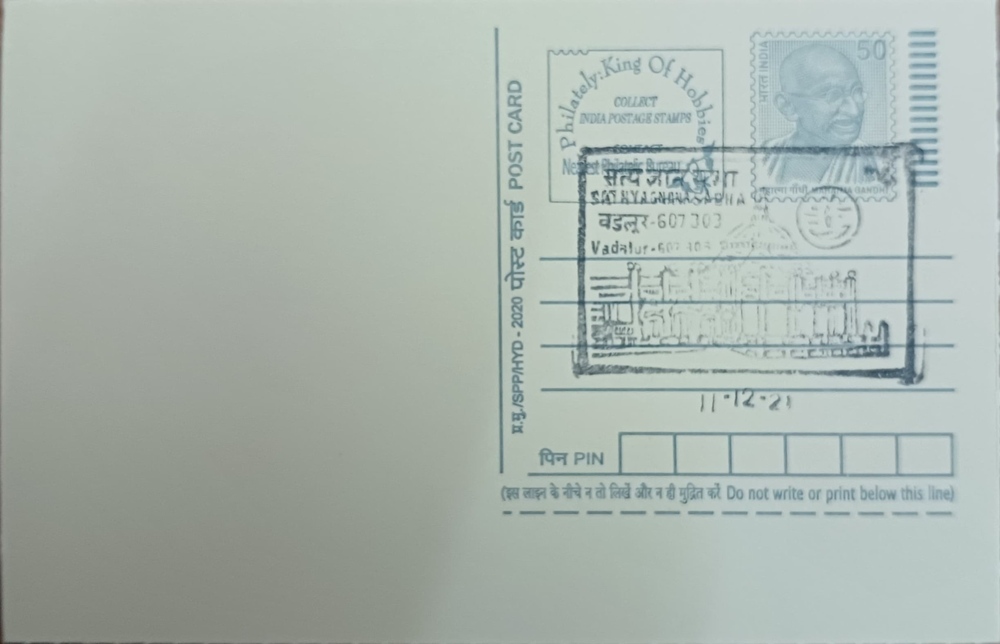

Sathya Gnana Sabha
சத்திய ஞான சபை


The name Sathya Gnana Sabha translates literally as the 'Hall of True Knowledge' or 'Hall of Pure Wisdom,' a designation chosen deliberately by its founder, the Tamil poet-saint Ramalinga Swamigal (Vallalar), to distinguish it from a conventional kovil or temple. Consecrated on 25 January 1872 at Vadalur, it was conceived not as a shrine to a deity but as a congregational hall where seekers of every caste and creed could gather to contemplate formless divine light rather than worship an iconic form. The founding act followed five years after Vallalar had already begun his public ministry of compassion at the same site, and the Sabha's very name signaled his break from ritual Hinduism toward what he termed Suddha Sanmarga, the 'pure path.'
As an institution, the Sathya Gnana Sabha occupies a distinctive place among South Indian sacred sites: it is revered by followers of the Suddha Sanmarga movement less as a temple in the orthodox sense than as a philosophical and devotional center built around the principle that God is formless light, Arut Perum Jyoti. Its significance rests on its association with Vallalar's broader social reform program, which rejected caste hierarchy, animal sacrifice, and idol worship at a time when such positions were highly unorthodox in 19th-century Tamil religious life. Today it functions as the spiritual headquarters of the Sanmarga Sangam, drawing adherents from across Tamil Nadu and abroad who regard it as the movement's most sacred site.
The building itself is an octagonal structure, popularly likened in form to a lotus, with doors and windows set into each face so that the interior altar remains visible from multiple angles. Inside, a five-stepped altar supports the sacred lamp that Vallalar lit in 1872, and this flame is said to have burned continuously since, tended by caretakers of the Sabha across generations. The sanctum is shielded from the congregation hall by seven curtains of differing colors hung in succession before the light, and the whole complex is enclosed by an outer wall further secured with chained railings. Sources associated with the movement describe the complex as comprising three linked halls, the Chidsabai, the Porsabai, and the Gnana Sabha proper, each carrying symbolic associations with aspects of perception and wisdom in Vallalar's teaching.
The defining ritual of the site is the Jyoti Darshan, observed annually during the Thai Poosam festival, when the seven curtains before the sanctum are withdrawn one at a time over a fixed sequence of hours, traditionally beginning around 6:30 a.m. and concluding only after the seventh curtain falls in the early hours of the following morning. Each curtain's removal is treated as a stage of deepening revelation, culminating in the devotees' unobstructed view of the lamp's flame, an event considered the closest approach to darshan of the formless divine within Vallalar's theology. The festival draws large crowds to Vadalur and has been observed for more than a century and a half, making it one of the longest-running annual commemorations tied to a single 19th-century reformer's teaching anywhere in Tamil Nadu.
The Sabha continues to be administered by trustees associated with the Vadalur Sathya Gnana Sabha and the wider Sanmarga movement, who also oversee the adjoining Sathya Dharma Salai, the free community kitchen Vallalar founded in 1867, whose oven is said to have remained lit without interruption since it was first kindled. Pilgrims visiting the Sabha typically also visit this kitchen and the nearby site from which Vallalar is said to have disappeared in 1874, treating the three locations as a single circuit of remembrance. The complex today draws a steady stream of visitors well beyond the Thai Poosam season, functioning less as a static monument than as the operating center of a living religious practice that still feeds and instructs people in Vallalar's name.
| Date of Introduction | January 30, 1999 |
|---|---|
| Address | Sub Postmaster, |
| Vadalur SO, | |
| Cuddalore (dt.), Tamil Nadu - 607303. |